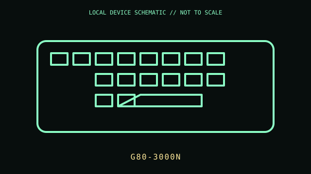

[ KEYBOARDS AND INTEGRATED POINTING DEVICES // IDENTIFIED COMPONENT ]
CHERRY G80-3000N RGB TKL
Wired tenkeyless mechanical keyboard from CHERRY’s G80-3000N RGB line.

MODEL IDENTIFICATION: Manufacturer identity: G80-3000N RGB TKL. Compare the unit label, regional suffix, and revision against the manufacturer's manual before repair or compatibility claims.
Model specifications
| Catalog subcategory | Keyboards and integrated pointing devices |
|---|---|
| Exact model / ID | G80-3000N RGB TKL |
| Model-specific features | USB-A wired connection; compact tenkeyless layout; RGB illumination; CHERRY MX switch option depends on the exact suffix and sales region. |
| Interface and host support | USB HID keyboard input; CHERRY Utility functions and lighting control require supported host software. The switch type is a SKU attribute, not inferable from the shared family name. |
| Revision / driver caveat | Inspect the underside label for the full G80 product suffix and switch variant. RGB feature control is software/firmware dependent; retain the correct regional manual and configuration software. |
Preservation and service notes
Unplug before cleaning. Remove keycaps only with a suitable puller; avoid liquid near switches and LEDs. Check stabilizers, USB lead, and key chatter before opening the case.
Record the as-found label, accessories, host OS, driver/firmware version, and test method. Separate observed condition from published specifications; do not treat family-level feature claims as proof of a unit's revision.
Primary manufacturer documentation
- CHERRY G80-3000N RGB TKL downloadsManufacturer manuals and software for this product family; verify the suffix and switch named on the keyboard label.
- CHERRY mechanical keyboard catalogManufacturer product family and terminology reference.
Manufacturer pages may change or retire. Preserve a copy of the applicable manual and note its revision when documenting a physical unit.